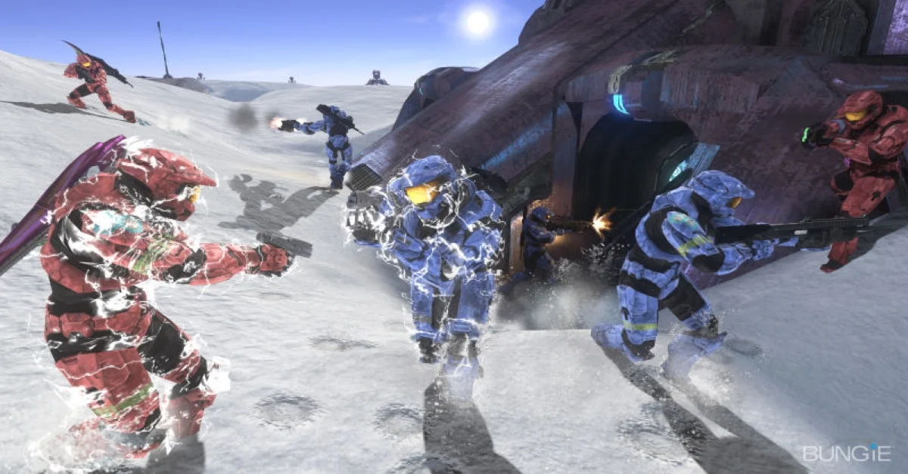

Halo: A Jornada Épica do Master Chief
Em 2001, o mundo dos games mudou para sempre com o lançamento de Halo: Combat Evolved. Enquanto os PCs dominavam os jogos de tiro, o Master Chief provou que os consoles podiam entregar uma experiência cinematográfica. A história nos coloca na pele de John-117, um supersoldado Spartan em uma guerra desesperada contra o Covenant, uma aliança alienígena religiosa que busca a extinção da humanidade. O "estalo" inicial foi a descoberta do misterioso anel Halo, uma arma de escala galáctica.

O grande diferencial que os "crias" da época piraram foi a jogabilidade inteligente. Halo não era apenas correr e atirar; era sobre usar o escudo recarregável estrategicamente e pilotar veículos icônicos como o Warthog em campos de batalha imensos. Com a chegada de Halo 2, a franquia revolucionou o mundo com a Xbox Live, introduzindo o sistema de matchmaking e festas online que definiram o padrão para todos os jogos competitivos modernos que jogamos hoje.
A conclusão da trilogia original em Halo 3 foi um evento cultural sem precedentes, vendendo milhões de cópias em apenas 24 horas. O jogo expandiu o universo com o modo "Forge", permitindo que a própria comunidade criasse seus mapas e modos de jogo malucos, como o famoso "Grifball". O Master Chief deixou de ser apenas um personagem de verde para se tornar o rosto de uma geração, simbolizando coragem e resiliência contra todas as probabilidades.
Mesmo após a transição da Bungie para a 343 Industries, a chama do Spartan nunca apagou. Halo Infinite trouxe uma nova perspectiva com o mundo aberto de Zeta Halo, misturando a nostalgia do combate clássico com novas mecânicas, como o gancho, que deu uma mobilidade insana para o Chief. Para quem quer reviver tudo isso, a Master Chief Collection é o santuário definitivo, unindo décadas de história com gráficos atualizados, garantindo que o legado de Halo continue vivo para os novos crias que estão chegando agora.